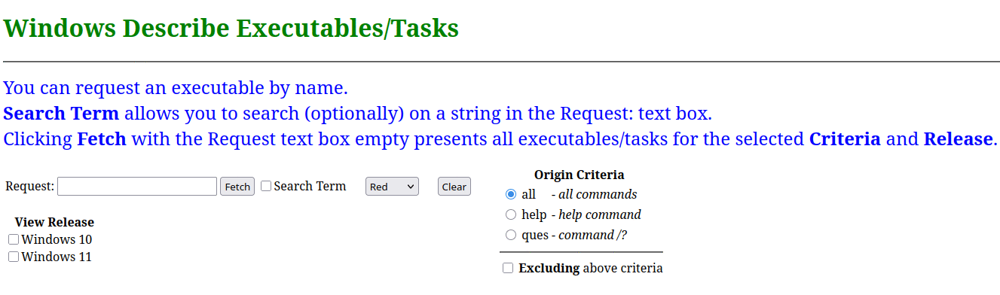
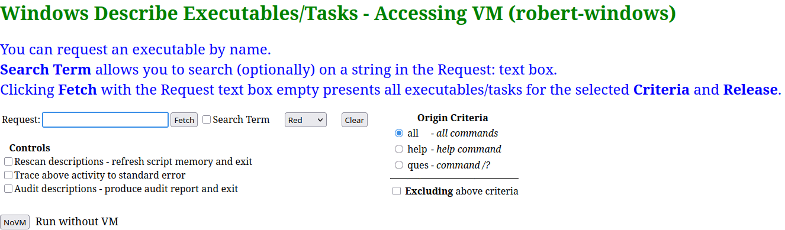
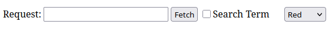
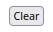
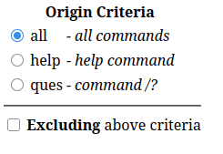
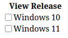
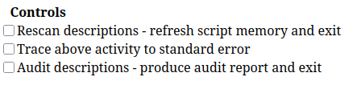
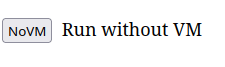

Help for Windows Describe Executables/Tasks
Sections:
Overview
System Configuration
Script URL Request Arguments
Page Sections
Description Configuration
Presenting Results
Errors
Overview
This is the help for the Windows Describe Executables/Tasks (describeWindows)
script.
This script is a Common Gateway Interface (CGI) script intended to be run
on a Web Server after being invoked with a Uniform Resource Locator (URL) request with
arguments.
This script is written in Linux bash and Python 3.
This script presents a browser-based application that provides descriptions
for Microsoft Windows 10 Pro and Windows 11 Pro commands and tasks. This script was
developed to provide a Windows
alternative to the Unix and Linux man command.
The script and the .html files were created and edited by
Robert Fetter (robert.fetter@verizon.net) during 2025-2026.
Windows command descriptions can come from multiple sources:
from the Windows help command,
from the command itself when given the /? arguent,
from a HTML file with description information contained in it.
The
contents of the HTML files has been mainly obtained from Google AI.
This script operates in two modes:
• stand-alone mode and
• Accessing Windows Virtual Machine (VM) mode.
Stand-Alone mode
This mode presents Windows cmd Commands and Tasks explainations.
It operates with cached descriptions gathered from the Windows help
command and from various COMMAND /? executions along with a set of
local .html files presenting descriptive information.
Having cache of the descriptions from these sources is fine as there are
no changes in them from Windows 10 to 11.
For the vast majority of users this mode of operation is all that is needed.
The main page is shown below:

The URL for running in this mode is:
http://localhost/cgi-bin/describeWindows
Accessing Windows Virtual Machine (VM) mode
This mode interacts with a Windows VM running either the Windows 10 or
Windows 11
operating systems. In this mode the script can access Windows help
descriptions and retrieve descriptive information from the execution
of COMMAND /?
command sequences and add any retrieved description information into a
cache for subsequent use.
All functions provided in the Stand-Alone mode are provided with
the addition of controls
for refreshing the script memory of available commands and tasks and
audit actions.
This mode of operation is only of interest and
use for those users who have an
interest and experience
in virtual machines (VMs), scripting languages, and networking.
The main page is shown below:

The URL for running in this mode is:
http://localhost/cgi-bin/describeWindows?sysref=SYSREF
where:
SYSREF is a system reference to a configured Windows
Virtual Machine (VM).
See sys.conf.docx
for more information.
System Configuration
These configuration instructions are only of interest and
use when operating this script
in the
Accessing Windows Virtual Machine (VM) mode
mode.
This script was written and operated on a Debian Linux system running the Apache Web Server
(https://www.apache.com).
The Windows VM systems are hosted in Oracle Virtualbox virtual machines (VMs)
(https://www.virtualbox.org/)
running on the Linux system.
Communication between the Linux system and a Windows VM is performed using the Secure Socket Shell (ssh) protocol
(https://www.openssh.com/).
The Windows VM system must be running a sshd server running as a
service from either CYGWIN
(https://www.cygwin.com/ or
the sshd provided by Microsoft.
For scripted access to a VM running Microsoft Windows
using ssh the program sshpass must be installed
on the system running the Web server.
To access a VM running Windows this script uses the sys.conf (described in
sys.conf.docx)
and sys.function (described in
sys.function.docx) files (both in the cgi-bin directory).
Script URL Request Arguments
The URL to run the script can be provided with arguments. The supported arguments and their meanings are given below.
| Argument | Meaning |
|---|
| audit |
This argument indicates that an audit is to be performed on the current description information and the
attached VM and report any problems.
|
| color |
This argument identifies the highlights for matches of a search term.
|
| command |
This argument identifies the command or search term for which
description information is to be obtained.
If this argument is provided proc is assumed.
|
| criteria |
This argument identifies the origin criteria for command descriptions to be presented.
|
| not |
This is defined when the Excluded selection in the Origin Criteria oage
section is selected. See Page Sections for more information.
|
| novm |
This argument means that no communication is to be performed with a Windows VM,
This argument is passed to all following runs of the script when called in processing.
|
| proc |
This argument identifies that processing is occuring after any initial start.
The absence of this argument is taken as an initial entry and the main page entry form
is presented.
|
| rescan |
This argument identifies a request to rescan command descriptions.
This is only honored is the argument novm is not provided and
a Windows VM is being accessed by the script.
If successful the description configuration for the release of Windows
provided by the VM is updated.
|
| searchterm |
This argument indicates that the text provided by the command argument
is to be treated as a search term to locate descriptions.
|
| sysref |
This argument is required to attach to a Microsoft Windows VM.
It identifies the SYSREF that is used in accessing the sys.conf file
with the shell functions provided in sys.function. Refer to the page section
System Configuration for more information.
If this argument is not provided novm is assumed.
This argument is passed to all following runs of the script when called in processing.
|
| trace |
This argument turns on a trace to standard error on actions performed
with the rescan argument.
|
| view10 |
This argument is from the View Release section of the
script operating in the Stand-Alone mode when Windows 10
is selected.
|
| view11 |
This argument is from the View Release section of the
script operating in the Stand-Alone mode when Windows 11
is selected.
|
Upon script startup normally does not have the proc argument provided. The absence of this
argumeent is interpreted as a basic startup and the initial main page is presented. This main
page based on the selections made defines arguments and the actions to be performed.
Subsequent exchanges result with the script being requested again but with additional defined arguments.
Page Sections
The page and it's sections are described below.
Starting out, the first page section to note is the command selection
and optional search:

A command to get an explaination for can be entered in the Request text box.
This defines the Script URL Arguments command argument..
A search term for a comand can also be entered with Search Term selected.
If Search Term is selected any command names and any
command synopsis text matching the given
search term are selected and highlighted.
Because the search highlighting may conflict with HTML
tags only alphabetic, numeric, period, or space characters are accepted.
Search text less than 3 characters in length is ignored.
This defines the Script URL Arguments searchterm
argument.
To the right is a pick list that allows for the selection of the highlight
color for search term matches.
Options:
Red (default)
Green
Purple
Black
This defines the color URL argument.
An empty Request text box results in all commands being selected for the
identified
Origin Criteria (see below).
The Fetch button retrieves the request.
Note: If an error is presented (only when Accessing VM) the Fetch button is disabled.
The Clear button is provided to reset the form to it's initial
default values:

The next page section described is for the Origin Criteria.

This page section allows for the selection of descriptions based on from where the
descriptions themselves are obtained. By default all is selected
meaning select all commands regardless of their description origin
status. The additional
options
of:
help command and
command /?
are presented to identify and select based on the source of the
description information.
These define the Script URL Arguments criteria argument.
At the bottom is "Excluding origin criteria".
This option negates the
above origin criteria such that, for example, if help command
is selected the result
is those commands that do not have help command
descriptions.
This defines the Script URL Arguments not argument.
The View Release page section is presented when the script is operating
in the Stand-Alone mode is described here. This section allows
for controlling the presentation of descriptions based on the Windows release.

Either one or both releases can be selected. If neither are selected
the script operates as if both were selected.
This section defines both the view10 and view11
Script URL Arguments.
This section is not presented when the script is operating in the
Accessing Windows VM mode as the release of Windows is controlled
by the release running on the VM.
The Controls page section for when the script is operating
in the Accessing Windows VM mode is described here. This section is not for
general use.

This page section is suppressed (not presented) if the
Script URL Arguments
novm argument is provided at startup or if the sysref
argument is not provided..
• The Rescan descriptions control refreshes the
script's configuration of what commands are available snd their description
origins. The configuration is checked to ensure that all configured commands
exist.
The system is checked as described
in the Description Configuration page section.
Any errors encountered
are presented in the browser and the configuration is not changed.
The script exits after performing this function.
This option defines the rescan
URL argument.
| Note: |
The configuration as provided is for a Microsoft
Windows system that has the
Microsoft Visual C environment with the Desktop Development for C++ workflow
and
Oracle Virtualbox Guest Additions software packages
installed. In addition the environment for CMD.EXE
had the PATH variable defined with all the
Microsoft Visual C environment settings,
Unless
these are installed and set up on the Windows VM system, it is probable
that running this will result in errors.
If this is selected and if errors are present then be prepared to move some of
the .HTML files
from the files directory.
See the Description Configuration page
section for more information.
|
This control is only used when adding additional HTML files which is not expected.
This defines the Script URL Arguments rescan argument.
The Trace option triggers a trace log of the Rescan activity.
This trace is written to standard error. Most Web servers are able to capture and log
standard error from CGI scripts.
This option defines the trace URL argument.
• The Audit descriptions control performs an audit of
all configured commands on the Windows VM system based on the release of Wondows installed in the VM.
The audit results are presented in the browser.
The script exits after performing this function.
This defines the Script URL Arguments audit argument.
This selection
runs the remainder of the script without any attempts to communicate
with a Windows VM:

Selecting this defines the Script URL Argument novm
argument for
subsequent processing. Selecting this immediately transfers to the Stand-Alone mode.
This page section is suppressed (not presented) if the Script URL Argument
novm argument is provided at startup or the sysref argument is provided.
If the script is run without the novm URL argument upon initial startup then upon an attempt
is made to communicate
with the Windows VM. When this is selected after startup then
all subsequent communication actions are suppressed.
Selecting this has the script including both Windows 10 & 11
descriptions.
When running in this mode no subsequent actions are made to communicate with a Windows VM.
See the Presenting Results
document section for more information on description results.
Description Configuration
These configuration instructions are only of interest and
use when operating this script
in the
Accessing Windows Virtual Machine (VM) mode
mode.
The commands supported for which descriptions are provided for are identified by HTML files contained in the Web server's
cgi-bin/files directory. The files individually identify by name the commands supported.
The files are of the form COMMAND_NAME.html where COMMAND_NAME identifies
the ommand. The COMMAND_NAME of the file name must be in upper case or it is an error. The .html suffix must be in lower case or it is not found.
The HTML file must contain as it's first line an entry of the form:
COMMAND - Synopsis
where:
• COMMAND is the name of the command that the file is for and must match the
COMMAND_NAME in the filename. COMMAND in the file can be in either upper or lower case.
• Synopsis is required and is the muliple word Synopsis of the command that will be presented.
The inclusion
of the hyphen between COMMAND and Synopsis in this file is optional.
It is an error is the first line of a HTML file is not of this form.
If a double asterisk (**) is present in the Synopsis the identified COMMAND
is marked as a either a Windows CMD.COM internal command and or is for an operation that does
not have a located executable file.
| Note: |
Entries marked with this double asterisk flag can be any of:
Internal commands in cmd.exe (ASSOC, CALL, CD, etc),
An action without an executable (RUN, SETTINGS), or
A task without a located executable (NTKRLA57, SECUREKERNELLA57, UIEORCHESTRATOR)
|
Basically an entry without an associated executable.
To identify which release of Microsoft Windows a COMMAND is appropriate, a given Synopsis can have present in it the
following strings:
NEW in win11
NOT in win11
These strings are case sensitive.
Where network references for entries have been located, they can be included
in a description in the form @net(URL) where URL is the network location
of an HTML page. This is presented as a link Network Description.
The identified page is presented in a seperate window.
References can be made in the .html files to other command/task
descriptions with entries of the form @ref(reference)
where reference is the name of the other command/task.
Instances of these entries
are replaced with links to the identified
reference description if it is defined.
The given reference can be any case and may optionally
have an executable suffix.
References are presented in lower case.
Based on the version of Windows the system and whether the
COMMAND is not an internal command/task,
the command
identified by COMMAND_NAME is checked to determine if it
exists.
It is an error
if it does not exist.
Also supported in the cgi-bin/files directory is the file
windows.cmd.question.txt which identifies by name the commands that support the
/? argument to present a command description.
Comments can be present in this file by the use of the hash-tag (#) chacter preceding
the comment.
This file contains lines of the form:
COMMAND information
where:
• COMMAND identifies the command. It can be either upper or lower case.
• Information is optional and presents information about the Command
The Information in this file is not used but is supported in this file to help identify the commands.
Only the first word of lines in this file is used.
Finally the list of Windows commands for which help can be obtained is retrieved.
It is an error if there is no HTML file defined for any command provided by Windows help.
The configuration is stored in a individual file based on the Windows release.
The configuration informantion is stored in:
cgi-bin/files/windows.cmd.win??.cmd_dict.data
where ?? is either 10 or 11 based on the Windows release.
Presenting results
If a known command is entered in the Request: text box and
Fetch is clicked with Search Term not
selected the available description inforaation is
presented.
When the results of a Fetch results in one or more results
(when Search Term was selected pr an emply Request:
text box was provided). a table is presented with 4 colums
as shown below:
|
| Executable / Task |
help cmd |
cmd /? |
Synopsis |
|---|
Known and matching if text was entered in
the Request: test box and Search Term was selected
any commends are presented in the first column.
The commands are given as links to that commands's description.
If Request: text box was empty then all known commands
are presented.
The second and third colums identify from where the command
description information is can be provided. This identification is made
with a colored
checkmark (✓).
The last column presents a short synopsis of the command.
If Search Term was selected and Request: had text entered any
matching text is highlighted.
For example:
First letter links:
19 presented. Origin criteria: all, searching for cmd.
|
| Executable / Task |
help cmd |
cmd /? |
Synopsis |
|---|
| C - 3 found |
| CMD | ✓ | ✓ | Windows Command Prompt
[C:\Windows\System32\cmd.exe] |
| CMDKEY | | ✓ | Create, list or delete stored user names, passwords or credentials.
[C:\Windows\System32\cmdkey.exe] |
| CMDL32 | | | Microsoft Connection Manager Auto-Download
[C:\Windows\System32\cmdl32.exe] |
| D - 1 found |
| DSREGCMD | | ✓ | Directory Service Registration
[C:\Windows\System32\dsregcmd.exe] |
| H - 1 found |
| HPATCHMONTASK | | | NEW in win11 Hotpatch Monitoring Service
[C:\Windows\System32\hpatchmonTask.cmd] |
| I - 1 found |
| INSTALL-SAMPLEPROVIDER | | | Install a sample Volume Shadow Copy Service (VSS)
[C:\Program Files (x86)\Windows Kits\10\bin\10.0.26100.0\x64\install-sampleprovider.cmd] |
| L - 1 found |
| LAUNCHDEVCMD | | | Visual Studio Developer Command Prompt
[c:\Program Files\Microsoft Visual Studio\2022\Community\Common7\Tools\LaunchDevCmd.bat] |
| M - 1 found |
| MODE | ✓ | ✓ | Configure a system device: COM / LPT port, or CMD console CON
[C:\Windows\System32\mode.com] |
| N - 1 found |
| NDKPERFCMD | | ✓ | NEW in win11 Testing Solace messaging performance and verifying client-to-broker connectivity.
[C:\Windows\System32\NDKPerfCmd.exe] |
| T - 1 found |
| TITLE | ✓ | ✓ | Set the window title for a CMD.EXE session **
[internal command/task] |
| U - 1 found |
| UNINSTALL-SAMPLEPROVIDER | | | Script to uninstall the VSS Sample Provider software
[C:\Program Files (x86)\Windows Kits\10\bin\10.0.26100.0\x64\uninstall-sampleprovider.cmd] |
| V - 5 found |
| VAULTCMD | | ✓ | Creates, displays and deletes stored credentials
[C:\Windows\System32\VaultCmd.exe] |
| VCPKG-CMD | | | Visual Studio C/C++ package manager
[c:\Program Files\Microsoft Visual Studio\2022\Community\VC\vcpkg\vcpkg-cmd.cmd] |
| VCPKG-INIT | | | Visual Studio C/C++ package manager initialization script
[c:\Program Files\Microsoft Visual Studio\2022\Community\VC\vcpkg\vcpkg-init.cmd] |
| VSDEVCMD | | | Visual Studio script sets up the environment for command line
[c:\Program Files\Microsoft Visual Studio\2022\Community\Common7\Tools\VsDevCmd.bat] |
| VSMSBUILDCMD | | | Visual Studio initialize command-line environment specifically for MSBuild
[c:\Program Files\Microsoft Visual Studio\2022\Community\Common7\Tools\VsMSBuildCmd.bat] |
| W - 3 found |
| WDFPERFENHANCEDVERIFIER | | | enable performance logging for WPT drivers
[C:\Program Files (x86)\Windows Kits\10\Windows Performance Toolkit\WdfPerfEnhancedVerifier.cmd] |
| WINAPPDEPLOYCMD | | ✓ | Utility for deploying applications to remote Windows devices
[C:\Program Files (x86)\Windows Kits\10\bin\10.0.26100.0\x64\WinAppDeployCmd.exe] |
| WINRM | | ✓ | Windows Remote Management
[C:\Windows\System32\winrm.cmd]
[C:\Windows\System32\winrm.vbs] |
Legend:
** internal command/task
• Network Description links:
Many refer to:
Windows commands | Microsoft Learn
(https://learn.microsoft.com/en-us/windows-server/administration/windows-commands)
Some refer to:
An A-Z Index of Windows CMD commands
(https://ss64.com/nt/)
• Many of the HTML descriptions are from Google AI
• Executable files have suffixes of:
.EXE .BAT .COM .CMD .CPL .VBS .VBE .JS .JSE .WSF .WSH .MSC
For all command lists each non-internal command have the pathname(s) to the executable file(s) that provide the command.
If an explaination for a command is requested the result is the presentation
the explaination with
sections for each available source.
When a command description is requested the possible command description sections are:
files/CMD.html
help CMD
CMD /?
where CMD is the command for which explainations are presented.
For example:
|
| Executable / Task |
help cmd |
cmd /? |
Synopsis |
|---|
| CMD | ✓ | ✓ | Windows Command Prompt
[C:\Windows\System32\cmd.exe] |
CMD Description
• files/CMD.html
CMD - Windows Command Prompt
Network Description
The Windows Command Prompt, known by its executable file
name cmd.exe, is the command-line interpreter application for
the Windows operating system. It provides a text-based interface for
users to interact directly with the operating system, bypassing the
graphical user interface (GUI) to automate tasks, manage files, and
troubleshoot system issues.
Key Information
Function: cmd.exe processes commands and batch files to perform tasks such as file management, system configuration, and network diagnostics.
Location: The executable file is typically located in C:\Windows\System32\.
Replacement for: It replaced COMMAND.COM from older DOS and Windows 9x systems.
Modern Alternative: Modern Windows versions also feature powershell, a more powerful and advanced shell that runs side-by-side with Command Prompt.
How to Open Command Prompt
You can access the Command Prompt in several ways:
Run Dialog: Press the Win + R (run) keys simultaneously, type cmd, and press Enter.
Start Menu Search: Click the Start menu (or press the Win key), type cmd or Command Prompt, and select the app from the search results.
Power User Menu: Press the Win + X keys (Windows 8, 10, 11) and select "Command Prompt" or "Windows Terminal" from the menu.
To run commands that require administrative privileges, select "Run as
administrator" from the Start menu search results or use the Ctrl +
Shift + Enter shortcut in the Run dialog.
Common Commands
The Command Prompt supports a wide array of commands. Some of the most frequently used ones include:
;; - Comment / Remark
cd - Change directory (navigate between folders).
dir - List files and subdirectories within the current directory.
mkdir - Create a new directory.
copy - Copy one or more files to a different location.
move - Move files from one directory to another.
del - Delete one or more files.
ipconfig - Display current TCP/IP network configuration values.
ping - Send test packets to a network host to check connectivity.
sfc /scannow - Run the System File Checker to repair missing or corrupted system files.
exit - Close the Command Prompt window.
Startup option
A script can be run when cmd.exe is
started. This script is defined in the Registry with regedit.
Add HKEY_CURRENT_USER\SOFTWARE\Microsoft\Command Processor\AutoRun as
string and set the value to the full pathname of a .BAT or .CMD
script to be executed when cmd.exe is started.
Internal Commands
There are many internal commands defined with cmd.exe.
These do not have their own executable file.
These are presented below.
assoc - Change file extension associations
break - Do nothing, successfully
call - Call one batch program from another
cd - Change Directory - Displays the name of or changes the current directory.
chdir - Change Directory - Displays the name of or changes the current directory.
cls - Clear the screen.
color - Sets the default console foreground and background colours
copy - Copy one or more files to another location
date - Display or set the date
del - Delete one or more files
dir - Display a list of files and folders
echo - Display messages on screen, turn command-echoing on or off
endlocal - End localisation of the environment in a batch file
erase - Delete one or more files
exit - Exits the command interpreter or the current batch script
for - Conditionally perform a command several times.
ftype - File extension file type associations
goto - Direct a batch program to jump to a labelled line
if - Conditionally perform a command
md - make directory
mkdir - Creates a directory
mklink - Create a symbolic link (linkd)
move - Move files from one folder to another
path - Display or set a search path for executable files
pause - Suspend processing of a batch file
popd - Return to a previous directory saved by PUSHD
prompt - Change the command prompt
pushd - Save and then change the current directory
rd - Delete a Directory
rem - Record comments (remarks) in a batch file
rename - Renames a file or files.
ren - Renames a file or files.
rmdir - Delete a Directory
set - Display, set, or remove session environment variables
setlocal - Control the visibility of environment variables
shift - Shift the position of batch file parameters
start - Start a program, command or batch file
time - Display or set the system time
title - Set the window title for a CMD.EXE session
type - Display the contents of a text file
ver - Display the current Operating System version
verify - Verify that files have been saved
vol - Display a disk label
Executable File Suffixes
The primary Windows executable file suffix (extension) is
.exe, which stands for "executable". However, several other file
suffixes are also treated as executables or runnable scripts by the
Windows operating system.
.exe The standard extension for native executable
computer programs in Windows, OS/2, and DOS. These files contain machine
code that the CPU can execute directly.
.com: Stands for "command file", a much older, simpler DOS-style executable format still supported in many Windows versions.
.bat: A batch file containing a sequence of commands executed by the Windows command interpreter (cmd.exe).
.cmd: Similar to .bat, a command script file for the command interpreter.
.scr: A screensaver file, which is essentially a renamed .exe file.
.cpl: A Control Panel extension file, also a type of executable that runs within the Control Panel context.
.msc: A Microsoft Management Console document, which is run by the mmc.exe program.
.pif: A Program Information File, used to store settings for DOS programs, which is also treated as executable.
.msi: A Microsoft Installer file, a package format used for installing software that can contain executable code.
Scripting files: Other extensions are handled by various Windows script interpreters, including:
.vbs and .vbe: VBScript files.
.js and .jse: JScript files.
.wsf and .wsh: Windows Script Files and Windows Script Host files.
Command-line syntax key
See Command line systax.
See also
run, doskey, powershell, regedit
• help CMD
Starts a new instance of the Windows command interpreter
CMD [/A | /U] [/Q] [/D] [/E:ON | /E:OFF] [/F:ON | /F:OFF] [/V:ON | /V:OFF]
[[/S] [/C | /K] string]
/C Carries out the command specified by string and then terminates
/K Carries out the command specified by string but remains
/S Modifies the treatment of string after /C or /K (see below)
/Q Turns echo off
/D Disable execution of AutoRun commands from registry (see below)
/A Causes the output of internal commands to a pipe or file to be ANSI
/U Causes the output of internal commands to a pipe or file to be
Unicode
/T:fg Sets the foreground/background colors (see COLOR /? for more info)
/E:ON Enable command extensions (see below)
/E:OFF Disable command extensions (see below)
/F:ON Enable file and directory name completion characters (see below)
/F:OFF Disable file and directory name completion characters (see below)
/V:ON Enable delayed environment variable expansion using ! as the
delimiter. For example, /V:ON would allow !var! to expand the
variable var at execution time. The var syntax expands variables
at input time, which is quite a different thing when inside of a FOR
loop.
/V:OFF Disable delayed environment expansion.
Note that multiple commands separated by the command separator '&&'
are accepted for string if surrounded by quotes. Also, for compatibility
reasons, /X is the same as /E:ON, /Y is the same as /E:OFF and /R is the
same as /C. Any other switches are ignored.
If /C or /K is specified, then the remainder of the command line after
the switch is processed as a command line, where the following logic is
used to process quote (") characters:
1. If all of the following conditions are met, then quote characters
on the command line are preserved:
- no /S switch
- exactly two quote characters
- no special characters between the two quote characters,
where special is one of: &<>()@^|
- there are one or more whitespace characters between the
two quote characters
- the string between the two quote characters is the name
of an executable file.
2. Otherwise, old behavior is to see if the first character is
a quote character and if so, strip the leading character and
remove the last quote character on the command line, preserving
any text after the last quote character.
If /D was NOT specified on the command line, then when CMD.EXE starts, it
looks for the following REG_SZ/REG_EXPAND_SZ registry variables, and if
either or both are present, they are executed first.
HKEY_LOCAL_MACHINE\Software\Microsoft\Command Processor\AutoRun
and/or
HKEY_CURRENT_USER\Software\Microsoft\Command Processor\AutoRun
Command Extensions are enabled by default. You may also disable
extensions for a particular invocation by using the /E:OFF switch. You
can enable or disable extensions for all invocations of CMD.EXE on a
machine and/or user logon session by setting either or both of the
following REG_DWORD values in the registry using REGEDIT.EXE:
HKEY_LOCAL_MACHINE\Software\Microsoft\Command Processor\EnableExtensions
and/or
HKEY_CURRENT_USER\Software\Microsoft\Command Processor\EnableExtensions
to either 0x1 or 0x0. The user specific setting takes precedence over
the machine setting. The command line switches take precedence over the
registry settings.
In a batch file, the SETLOCAL ENABLEEXTENSIONS or DISABLEEXTENSIONS arguments
takes precedence over the /E:ON or /E:OFF switch. See SETLOCAL /? for details.
The command extensions involve changes and/or additions to the following
commands:
DEL or ERASE
COLOR
CD or CHDIR
MD or MKDIR
PROMPT
PUSHD
POPD
SET
SETLOCAL
ENDLOCAL
IF
FOR
CALL
SHIFT
GOTO
START (also includes changes to external command invocation)
ASSOC
FTYPE
To get specific details, type commandname /? to view the specifics.
Delayed environment variable expansion is NOT enabled by default. You
can enable or disable delayed environment variable expansion for a
particular invocation of CMD.EXE with the /V:ON or /V:OFF switch. You
can enable or disable delayed expansion for all invocations of CMD.EXE on a
machine and/or user logon session by setting either or both of the
following REG_DWORD values in the registry using REGEDIT.EXE:
HKEY_LOCAL_MACHINE\Software\Microsoft\Command Processor\DelayedExpansion
and/or
HKEY_CURRENT_USER\Software\Microsoft\Command Processor\DelayedExpansion
to either 0x1 or 0x0. The user specific setting takes precedence over
the machine setting. The command line switches take precedence over the
registry settings.
In a batch file the SETLOCAL ENABLEDELAYEDEXPANSION or DISABLEDELAYEDEXPANSION
arguments takes precedence over the /V:ON or /V:OFF switch. See SETLOCAL /?
for details.
If delayed environment variable expansion is enabled, then the exclamation
character can be used to substitute the value of an environment variable
at execution time.
You can enable or disable file name completion for a particular
invocation of CMD.EXE with the /F:ON or /F:OFF switch. You can enable
or disable completion for all invocations of CMD.EXE on a machine and/or
user logon session by setting either or both of the following REG_DWORD
values in the registry using REGEDIT.EXE:
HKEY_LOCAL_MACHINE\Software\Microsoft\Command Processor\CompletionChar
HKEY_LOCAL_MACHINE\Software\Microsoft\Command Processor\PathCompletionChar
and/or
HKEY_CURRENT_USER\Software\Microsoft\Command Processor\CompletionChar
HKEY_CURRENT_USER\Software\Microsoft\Command Processor\PathCompletionChar
with the hex value of a control character to use for a particular
function (e.g. 0x4 is Ctrl-D and 0x6 is Ctrl-F). The user specific
settings take precedence over the machine settings. The command line
switches take precedence over the registry settings.
If completion is enabled with the /F:ON switch, the two control
characters used are Ctrl-D for directory name completion and Ctrl-F for
file name completion. To disable a particular completion character in
the registry, use the value for space (0x20) as it is not a valid
control character.
Completion is invoked when you type either of the two control
characters. The completion function takes the path string to the left
of the cursor appends a wild card character to it if none is already
present and builds up a list of paths that match. It then displays the
first matching path. If no paths match, it just beeps and leaves the
display alone. Thereafter, repeated pressing of the same control
character will cycle through the list of matching paths. Pressing the
Shift key with the control character will move through the list
backwards. If you edit the line in any way and press the control
character again, the saved list of matching paths is discarded and a new
one generated. The same occurs if you switch between file and directory
name completion. The only difference between the two control characters
is the file completion character matches both file and directory names,
while the directory completion character only matches directory names.
If file completion is used on any of the built in directory commands
(CD, MD or RD) then directory completion is assumed.
The completion code deals correctly with file names that contain spaces
or other special characters by placing quotes around the matching path.
Also, if you back up, then invoke completion from within a line, the
text to the right of the cursor at the point completion was invoked is
discarded.
The special characters that require quotes are:
<space>
&()[]{}^=;!'+,`~
• CMD /?
The description from this is the same as the description from help above.
End of description
Errors
These errors only occur when operating this script
in the
Accessing Windows Virtual Machine (VM) mode
mode.
If there are any problems establishing communication with a
virtual machine (VM)
running
the Windows operating system an error message will be presented
Examples of these messages are:
>• ERROR: sysref 'SYSREF' not in sys.conf
| Resolution: |
Edit URL sysref or sys.conf. and retry.
|
• ERROR: sysref 'SYSREF' platform not Windows
| Resolution: |
Edit URL sysref or sys.conf. and retry.
|
• ERROR: IP file /home/robert/addr/ip.windows not found
| Resolution: |
The IP address file does not exist. Create a Windows startup file
that populates the file with the system's IP addrss and restart.
|
• ERROR: Cannot set 192.168.1.221 robert-windows in /etc/hosts
| Resolution: |
The /etc/hosts file cannot be written to. As root run chmod 666 /etc/hosts and retry.
|
>• ERROR: System is not running: robert-windows. Refresh to recheck.
| Resolution: |
Start the VM and retry.
|
• ERROR: Network is unreachable - Cannot contact robert-windows
| Resolution: |
The network must be restarted.
On Debian Linux the command that does this is: sudo systemctl restart NetworkManager
|
During operation of the script accessing a Windpws VM the following error message might
be presented:
•ERROR: Lost connection to robert-windows - Message
| Resolution: |
if Message contains Network is unreachable
restart the network.
For all cases Restart the VM and retry the script.
|
As described in the Configuration document
section any errors encountered are presented
after the run of the Rescan descriptions Control.
Examples of these messages are:
•ERROR: COMMAND.html: executable not found COMMAND
| Resolution: |
Check the spelling or COMMAND might be for a different release of Windows
(see Description Configuration).
Correct the description and retry.
|
•ERROR: File COMMAND.html First line does not have Synopsis
•ERROR: First word of first line 'COMMAND.html' does not match filename 'COMMAND' preceeding '.html'
| Resolution: |
The first word of the first line does not match filename. See Description Configuration.
Correct the description and retry.
|
END OF HELP